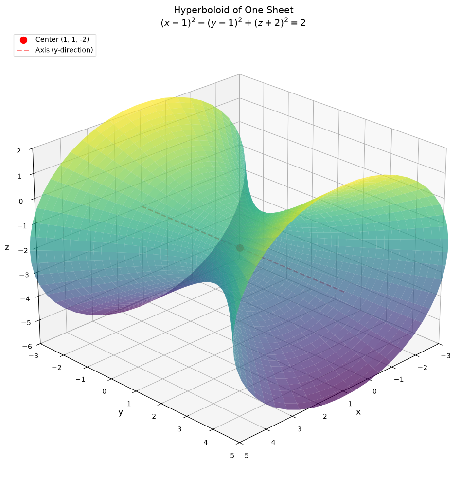
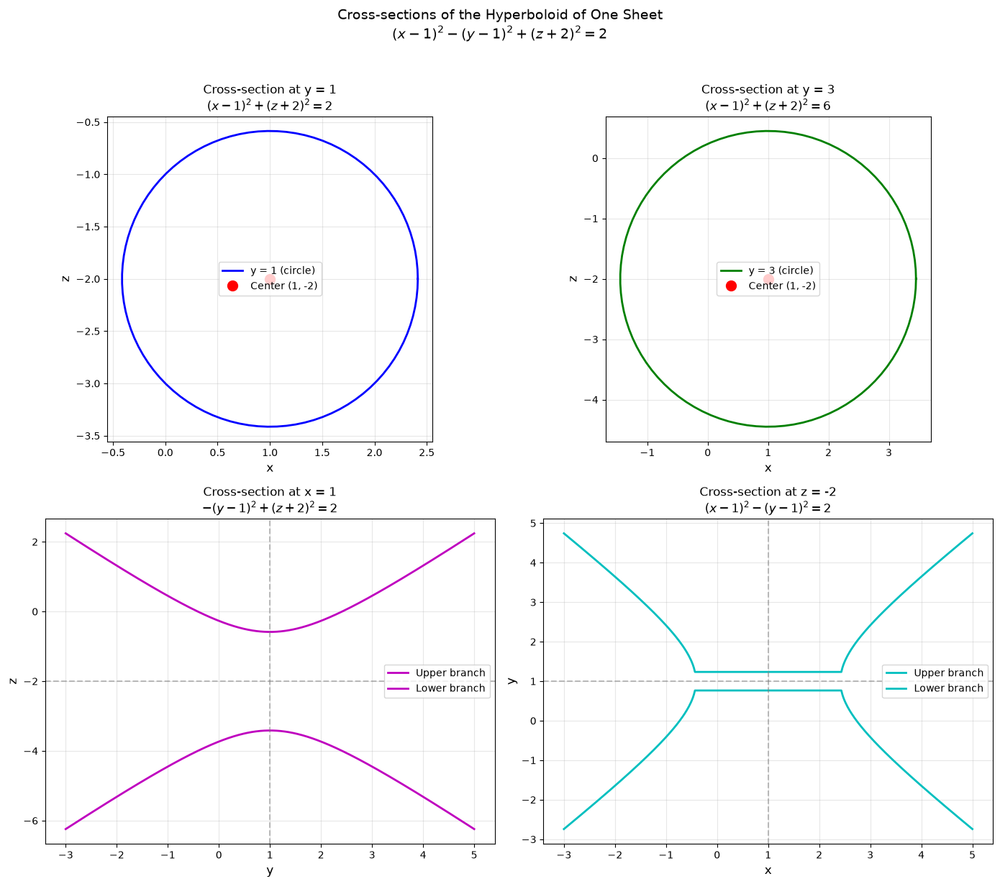
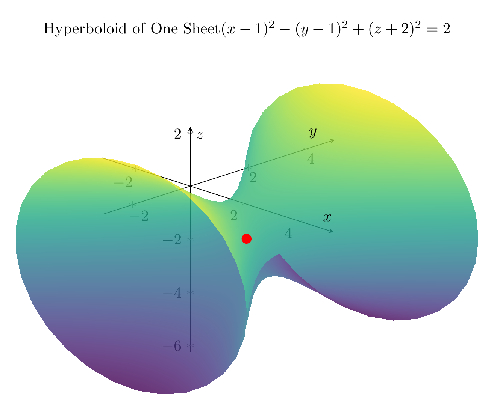
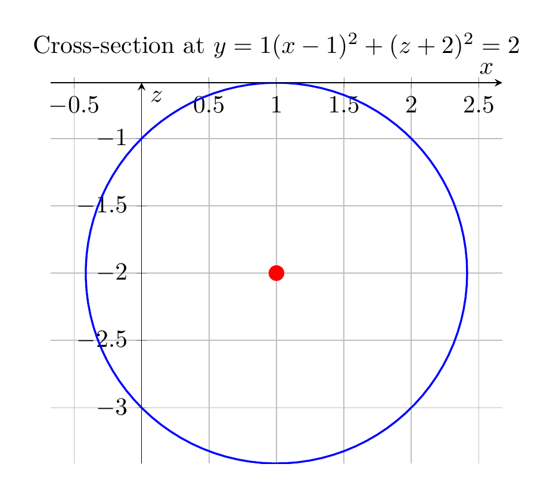

Path: mcma-Qwen3.5-397B-A17B/calculus-12.6.36/chat_20260823_213419_382793_utc_0800
Problem
Please solve the math problem in the image.

End of problem
Answer
# Solution: Reducing the Equation to Standard Form
## Problem
Reduce the equation to one of the standard forms, classify the surface, and sketch it:
$$x^2 - y^2 + z^2 - 2x + 2y + 4z + 2 = 0$$
## Step 1: Complete the Square
To reduce this equation to standard form, we need to complete the square for each variable.
### For $x$ terms:
$$x^2 - 2x = (x-1)^2 - 1$$
### For $y$ terms:
$$-y^2 + 2y = -(y^2 - 2y) = -[(y-1)^2 - 1] = -(y-1)^2 + 1$$
### For $z$ terms:
$$z^2 + 4z = (z+2)^2 - 4$$
## Step 2: Substitute Back into the Original Equation
Substituting these completed squares:
$$(x-1)^2 - 1 - (y-1)^2 + 1 + (z+2)^2 - 4 + 2 = 0$$
Simplifying the constants:
$$(x-1)^2 - (y-1)^2 + (z+2)^2 - 2 = 0$$
## Step 3: Write in Standard Form
$$(x-1)^2 - (y-1)^2 + (z+2)^2 = 2$$
Dividing by 2 to get the canonical form:
$$\frac{(x-1)^2}{2} - \frac{(y-1)^2}{2} + \frac{(z+2)^2}{2} = 1$$
Or equivalently:
$$\boxed{\frac{(x-1)^2}{(\sqrt{2})^2} - \frac{(y-1)^2}{(\sqrt{2})^2} + \frac{(z+2)^2}{(\sqrt{2})^2} = 1}$$
## Step 4: Classify the Surface
This is a **hyperboloid of one sheet** with:
- **Center**: $(1, 1, -2)$
- **Axis**: The $y$-axis (the variable with the negative sign)
- **Semi-axes**: All equal to $\sqrt{2}$
### Key Characteristics:
1. **Cross-sections perpendicular to the axis** (constant $y$): Circles
2. **Cross-sections containing the axis** (constant $x$ or $z$): Hyperbolas
3. The surface is connected (one sheet) and extends infinitely along the $y$-axis
## Visual Representation
The plots show:
1. **3D visualization**: The complete hyperboloid of one sheet centered at $(1, 1, -2)$
2. **2D cross-sections**:
- Circular cross-sections at $y = 1$ and $y = 3$
- Hyperbolic cross-sections at $x = 1$ and $z = -2$
The surface opens along the $y$-direction, with the "waist" (minimum cross-section) occurring at $y = 1$ where the radius is $\sqrt{2}$.
---




\documentclass[border=10pt]{standalone}
\usepackage{pgfplots}
\pgfplotsset{compat=1.18}
\usepgfplotslibrary{colormaps}
\begin{document}
\begin{tikzpicture}
\begin{axis}[
width=12cm,
height=10cm,
xlabel={$x$},
ylabel={$y$},
zlabel={$z$},
title={Hyperboloid of One Sheet \\ $(x-1)^2 - (y-1)^2 + (z+2)^2 = 2$},
view={45}{25},
colormap/viridis,
grid=major,
axis lines=center,
]
% Plot the hyperboloid of one sheet
% Parametric form: x = 1 + sqrt(2+(y-1)^2)*cos(theta), z = -2 + sqrt(2+(y-1)^2)*sin(theta)
\addplot3[
surf,
domain=-3:5,
y domain=0:360,
samples=30,
samples y=30,
opacity=0.8,
shader=interp,
]
({1 + sqrt(2+(x-1)^2)*cos(y)}, {x}, {-2 + sqrt(2+(x-1)^2)*sin(y)});
% Add center point
\addplot3[red, only marks, mark=*, mark size=3pt] coordinates {(1,1,-2)};
\end{axis}
\end{tikzpicture}
\end{document}

\documentclass[border=10pt]{standalone}
\usepackage{pgfplots}
\pgfplotsset{compat=1.18}
\begin{document}
% Cross-section 1: y = 1 (circle in xz-plane)
\begin{tikzpicture}
\begin{axis}[
width=8cm,
height=7cm,
xlabel={$x$},
ylabel={$z$},
title={Cross-section at $y = 1$ \\ $(x-1)^2 + (z+2)^2 = 2$},
axis equal,
grid=major,
axis lines=center,
]
\addplot[blue, thick, domain=0:360, samples=100]
({1 + sqrt(2)*cos(x)}, {-2 + sqrt(2)*sin(x)});
\addplot[red, only marks, mark=*, mark size=3pt] coordinates {(1,-2)};
\end{axis}
\end{tikzpicture}
\end{document}

End of answer